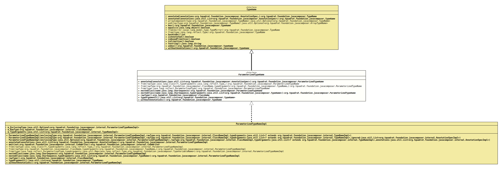

Interface ParameterizedTypeName
- All Superinterfaces:
TypeName
- All Known Implementing Classes:
ParameterizedTypeNameImpl
@ClassVersion(sourceVersion="$Id: ParameterizedTypeName.java 943 2021-12-21 01:34:32Z tquadrat $")
@API(status=STABLE,
since="0.0.5")
public sealed interface ParameterizedTypeName
extends TypeName
permits ParameterizedTypeNameImpl
The specialisation of
TypeName
for parameterised types.- Author:
- Square,Inc.
- Modified by:
- Thomas Thrien (thomas.thrien@tquadrat.org)
- Version:
- $Id: ParameterizedTypeName.java 943 2021-12-21 01:34:32Z tquadrat $
- Since:
- 0.0.5
- UML Diagram
-

UML Diagram for "org.tquadrat.foundation.javacomposer.ParameterizedTypeName"
{kind=link}
-
Method Summary
Modifier and TypeMethodDescriptionannotated(List<AnnotationSpec> annotations) Creates a new instance for an implementation ofTypeNameas a copy of this one, but with the given annotations added.static ParameterizedTypeNameReturns a parameterised type, applying the given type arguments to the given raw type.static ParameterizedTypeNamefrom(ParameterizedType type) Returns a parameterised type equivalent to the given type.static ParameterizedTypeNameReturns a parameterised type, applying the given type arguments to the given raw type.static ParameterizedTypeNameDeprecated, for removal: This API element is subject to removal in a future version.static ParameterizedTypeNameget(ParameterizedType type) Deprecated, for removal: This API element is subject to removal in a future version.Usefrom(ParameterizedType)instead.static ParameterizedTypeNameDeprecated, for removal: This API element is subject to removal in a future version.Usefrom(ClassName, TypeName...)instead.nestedClass(CharSequence name) Returns a newParameterizedTypeNameinstance for the specified name as nested inside this class.nestedClass(CharSequence name, List<TypeName> typeArguments) Returns a newParameterizedTypeNameinstance for the specified name as nested inside this class, with the specified type arguments.rawType()Returns the raw type for this parameterised type name.Returns the type arguments for this parameterised type name.Creates a new instance for an implementation ofTypeNameas a copy of this one, but without any annotations.Methods inherited from interface org.tquadrat.foundation.javacomposer.TypeName
annotated, box, equals, hashCode, isAnnotated, isBoxedPrimitive, isPrimitive, toString, unbox
-
Method Details
-
annotated
Creates a new instance for an implementation ofTypeNameas a copy of this one, but with the given annotations added. -
from
@API(status=STABLE, since="0.2.0") static ParameterizedTypeName from(Class<?> rawType, Type... typeArguments) Returns a parameterised type, applying the given type arguments to the given raw type.- Parameters:
rawType- The class name for the new type.typeArguments- The type arguments.- Returns:
- The new instance of
ParameterizedTypeName.
-
from
@API(status=STABLE, since="0.2.0") static ParameterizedTypeName from(ClassName rawType, TypeName... typeArguments) Returns a parameterised type, applying the given type arguments to the given raw type.- Parameters:
rawType- The class name for the new type.typeArguments- The type arguments.- Returns:
- The new instance of
ParameterizedTypeName.
-
from
Returns a parameterised type equivalent to the given type.- Parameters:
type- The other type.- Returns:
- The new instance of
ParameterizedTypeName.
-
get
@Deprecated(since="0.2.0", forRemoval=true) @API(status=DEPRECATED, since="0.0.5") static ParameterizedTypeName get(Class<?> rawType, Type... typeArguments) Deprecated, for removal: This API element is subject to removal in a future version.Usefrom(Class, Type...)instead.Returns a parameterised type, applying the given type arguments to the given raw type.- Parameters:
rawType- The class name for the new type.typeArguments- The type arguments.- Returns:
- The new instance of
ParameterizedTypeName.
-
get
@Deprecated(since="0.2.0", forRemoval=true) @API(status=DEPRECATED, since="0.0.5") static ParameterizedTypeName get(ClassName rawType, TypeName... typeArguments) Deprecated, for removal: This API element is subject to removal in a future version.Usefrom(ClassName, TypeName...)instead.Returns a parameterised type, applying the given type arguments to the given raw type.- Parameters:
rawType- The class name for the new type.typeArguments- The type arguments.- Returns:
- The new instance of
ParameterizedTypeName.
-
get
@Deprecated(since="0.2.0", forRemoval=true) @API(status=DEPRECATED, since="0.0.5") static ParameterizedTypeName get(ParameterizedType type) Deprecated, for removal: This API element is subject to removal in a future version.Usefrom(ParameterizedType)instead.Returns a parameterised type equivalent to the given type.- Parameters:
type- The other type.- Returns:
- The new instance of
ParameterizedTypeName.
-
nestedClass
Returns a newParameterizedTypeNameinstance for the specified name as nested inside this class.- Parameters:
name- The name for the nested class.- Returns:
- The new nested class.
-
nestedClass
Returns a newParameterizedTypeNameinstance for the specified name as nested inside this class, with the specified type arguments.- Parameters:
name- The name for the nested class.typeArguments- The type arguments.- Returns:
- The new nested class.
-
rawType
Returns the raw type for this parameterised type name.- Returns:
- The raw type.
-
typeArguments
List<? extends TypeName> typeArguments()Returns the type arguments for this parameterised type name.- Returns:
- The type arguments.
-
withoutAnnotations
Creates a new instance for an implementation ofTypeNameas a copy of this one, but without any annotations.- Specified by:
withoutAnnotationsin interfaceTypeName- Returns:
- The new instance.
-
from(Class, Type...)instead.